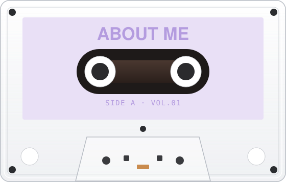

About
hi! I’m Dani Yeyang (yeah-young) Tian, a product designer who transforms complex, real-world systems into clear and intuitive experiences. currently @ UMich MSI.

hi! I’m Dani Yeyang (yeah-young) Tian, a product designer who transforms complex, real-world systems into clear and intuitive experiences. currently @ UMich MSI.